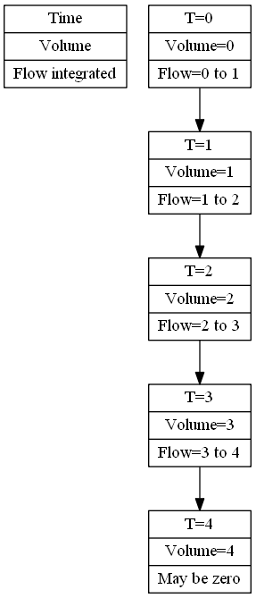

wflow_delwaq Module¶
The wflow_delwaq module provides a set of functions to construct a delwaq pointer file from a PCRaster local drainage network. A command-line interface is provide that allows you to create a delwaq model that can be linked to a wflow model.

The script sets-up a one-layer model (representing the kinematic wave reservoir). Water is labeled according to the area and flux where it enters the kinematic wave reservoir.
For the script to work a run of the wflow model must be available and a template directory in which the delwaq model is created should also be available. These are indicated by the -C -R and -D command line options. The -R and -C options indicate the wflow case and wflow run directories while the -D option indicates the delwaq template directory.
The template used is shown below:
debug/
fixed/
fixed/B2_numsettings.inc
fixed/B4_dispersion.inc
fixed/B4_dispx.inc
fixed/B9_Hisvar.inc
fixed/B9_Mapvar.inc
includes_deltashell/
includes_flow/
run.bat
dlwqlib.dll
libcta.dll
libiomp5md.dll
waq_plugin_wasteload.dll
delwaq1.exe
delwaq2.exe
deltashell.inp
The debug, includes_flow, and includes_deltashell directories are filled by the script. After that delwaq1.exe and delwaq2.exe programs may be run (the run.bat file shows how this is done):
delwaq1.exe deltashell.inp -np
delwaq2.exe deltashell.inp
the script sets up delwaq such that the result for the wflow gauges locations are stored in the deltashell.his file.
How the script works¶
The pointer file for delwaq is made using the following information:
- The wflow_ldd.map files is used to create the internal flow network, it defines the segments and how water flows between the segments
- The number of inflows into each segment determines is taken from the sources mapstacks (-S option). Together these sources should include all the water that enters the kinematic wave reservoir. These are the red and green arrows in the figure below
- The delwaq network is generated for the area define in the wflow_catchment map. The included area is define by all cells were the catchment id in a cel is larger than 1.

Figure: How exchanges and inflows are connected
Within the includes_flow directory the following files are made:
- volume.dat - volumes (N+1) noseg
- flow.dat - flows (N). Contents is noq
- area.dat - N timesteps. Content is noq
- surface.dat - surface area of the water per segment (N+1), noseq
- length.dat - One timestep only (constant). Content is two times noq
Here nrseg is the number of segments (taken from the non-missing grid cell in the wflow_ldd.map file) and noq is the number of exchanges which is calculated as the number of segments plus number the of inflows (in each segment) times the number of segments
Delwaq expects volumes to be instantanious values at the start of a timestes while flows are integrated between tow timesteps. For volumes N+1 timesteps are needed, for flows N timesteps. The figure below demonstrates this principle for N=4.

The volume.dat file is filled with N+1 steps of volumes of the wflow kinematic wave reservoir. To obtain the needed lag between the flows and the volumes the volumes are taken from the kinematic wave reservoir one timestep back (OldKinWaveVolume).
The flow.dat files is filled as follows. For each timestep internal flows (within the kinematic wave reservoir, i.e. flows from segment to segment) are written first (blue in the layout above). Next the flow into each segment are written. Depending on how many inflow types are given to the script (sources). For one type, one set of flows is written, if there are two types two sets etc (green and red in the layout above).
Very simple example:¶
The following very simple example demonstrated how the pointer file is created. First the pcraster ldd:

The resulting network consist of 10 points:

As can be seen both 9 and 10 are bottom points. The generated pointer file is shown below:
;Written by dw_WritePointer
;nr of pointers is: 20
1 3 0 0
2 4 0 0
3 5 0 0
4 6 0 0
5 7 0 0
6 8 0 0
7 9 0 0
8 10 0 0
9 -1 0 0
10 -2 0 0
-3 1 0 0
-4 2 0 0
-5 3 0 0
-6 4 0 0
-7 5 0 0
-8 6 0 0
-9 7 0 0
-10 8 0 0
-11 9 0 0
-12 10 0 0
Case study for Malaysia and Singapore¶
To estimate load of different nutrients to Johor strait two wflow_sbm models have been setup. Next these models where linked to delwaq as follows:
- A delwaq segment network similar to the wflow D8 ldd was made
- The volumes in the delwaq segment are taken from the wflow_sbm kinematic wave volumes
- For each segment two sources (inflows) are constructed, fast and slow each representing different runoff compartments from the wflow model. Fast represents SOF [1], HOF [2] and SSSF [3] while Slow represent groundwater flow.
- Next the flow types are combined with the available land-use classes. As such a Luclass times flowtypes matrix of constituents is made. Each constituent (e.g. Slow flow of LU class 1) is traced troughout the system. All constituents are conservative and have a concentration of 1 as they flow in each segement.
- To check for consistency an Initial water type and a Check water type are introduced. The Initial water will leave the system gradually after a cold start, the Check water type is added to each flow component and should be 1 at each location in the system (Mass Balance Check).
| [1] | SOF: Saturation Overland Flow |
| [2] | HOF: Hortonian Overland Flow (or infiltration excess Overland Flow) |
| [3] | SSSF: SubSurface Storm Flow. Rapid lateral flow through the top part of the soil profile. |
The above results in a system in which the different flow types (including the LU type where they have been generated) can be traced throughout the system. Each each gauge location the discharge and the flow components that make up the discharge are reported.

Figure: Discharge and flow types for a small Singapore catchment. The Singapore catchment are dominated by fast flow types but during the end of the dry periods the slow flow types start to rise in importance.

Figure: Discharge, flow types and resulting total P for a catchment in Malaysia.
By assuming each flow type is an end-member in a mixing model we can add fixed concentration of real parameters to the flow fractions and multiply those with the concentrations of the end-membesrt modelled concentration at the gauge locations can be obtained for each timestep.

Figure: Flow types in the topog_sbm models used in the Singapore/Malaysia case. HOF = Hortonian or Infiltration excess overland flow. SOF = Saturation overland flow, GW = exfiltrating groundwater. Note that the subcell representation of saturated areas means that both SOF and GW can occur before a cell is completely saturated.
The figure above shows the flow types in the models used in Singapore and Malaysia. Groundwater flow (both from completely saturated cell and subcell groundwater flow) makes up the Slow flow that is fed into the delwaq model while SOF and HOF make up the Fast flow to the delwaq model. In addition the water is also labelled according to the landuse type of the cell that it flows out off.
The whole procedure was setup in a Delft-FEWS configuration that can run the following steps operationally:
![digraph Flows {
node[shape=record,width=.1,height=.1];
"Pre-Process P, T and PET data to match the model grid" -> "Run the hydrological Model"
"Run the hydrological Model" -> " Save all flows per cell"
" Save all flows per cell" -> "Feed flows per LU type and flow type to delwaq"
"Feed flows per LU type and flow type to delwaq" -> "Obtain flow fraction per LU and flow type at gauge locations"
"Obtain flow fraction per LU and flow type at gauge locations" -> "Multiply constituent concentration per LU and flow type with fraction"
"Multiply constituent concentration per LU and flow type with fraction" -> "Sum all fraction concentrations to obtain total concentration at gauge locations"
}](_images/graphviz-6943d4a394324f36d7cce83d9acc41f2fafa6e40.png)
wflow_delwaq module documentation¶
Introduction¶
Simple export library for pcraster/python delwaq link. The module can be used to export an ldd to a delwaq pointer file and fill the input arrays. The library includes a command-line interface that allows you to setup a delwaq model and feed it with forcing data.
Warning
This is an experimental version. A complete redesign is needed as this version is unstable and very poorly structured!
the wflow run should have saved at least the folowing mapstacks:
- self.OldKinWaveVolume=vol
- self.WaterLevel=lev
- self.SurfaceRunoff=run
- self.Inwater=inw (or the different components that make up this flux)
The script always sets-up at least two Substances, Initial and Check. Initial is present everywhere at startup and the concentration is zero in all inputs. Check is not present at startup and set to 1 in all inputs.
The script takes an areamap that can be used to tag water as it enters the model. This can be a landuse map, a subcatchment map etc. Furthermore water can also be tagged based on the flux into the model.
The naming of the sustances is as follows: “Area” areamap_class inflow_number
Command line options:
-C: caseDir - set the wflow case directory to use
-R: runId - set the wflow runId to use
-T: Set last timestep
-O: set starttime ('%Y-%m-%d% H:%M:%S')
-a: Also write dynamic area data if this option is set
-j: if this option is set the static data is not generated (default is on)
-A: sets the areamap used to specify the fraction sources. This can be
a subcatcment map, a soil type map, a land use maps etc. Default is:
staticmaps/wflow_subcatch.map (relative to the caseDir directory)
-D: delwaqdir - set the basedir to create the delwaq schematisation in
-S: sourcemap - name of the wflow output map to use as source.
it should be a variable that flows into the kinematic wave routine
inw is normally used as it contain all water per cell that flows into
the kinematic wave function.
Use multiple -S options to include multiple maps
-s: Set the model timesteps in seconds (default 86400)
-F: if set the model is expected to be run by FEWS. It will determine
the timesteps from the runinfo.xml file and save the output initial
conditions to an alternate location. The runinfo.xml file should be located
in the inmaps directory of the case.
-c: Name of the wflow configuration file
Todo
add support for a coarser delwaq network based on supplied map.
Todo
Test option to seperate construction of network from filling of the input arrays
Todo
Ad support to not only follow the kinematic wave reservoir but also the flow trough the soil reservoirs. Basically make three layers:
- kinematic wave reservoir (surface water)
- unsaturated store (only vertical flow)
- saturated store (horizontal and vertical flow)
$Author: schelle $ $Id: wflow_delwaq.py 813 2013-10-07 09:18:36Z schelle $ $Rev: 813 $
- wflow_delwaq.dw_CreateDwRun(thedir)¶
” create the dir to save delwaq info in
- wflow_delwaq.dw_WriteBoundData(fname, areas)¶
writes B5_bounddata.inc
- wflow_delwaq.dw_WriteBoundlist(fname, pointer, areas, of, inflowtypes)¶
Writes the boundary list file B5_boundlist.inc Numbering is abs(exchnage id)
- Input:
- fname, pointer
Todo
- add labeling of different inflows ( the information is already present)
- wflow_delwaq.dw_WriteInitials(fname, inmaps)¶
B8_initials.inc
- wflow_delwaq.dw_WriteNrExChnages(fname, nr)¶
Writes the number of exchnages to file (number of rows in the pointer file)
B4_nrofexch.inc
- wflow_delwaq.dw_WriteNrSegments(fname, nr)¶
Writes the number of segments to B3 file
B3_nrofseg.inc
- wflow_delwaq.dw_WritePointer(fname, pointer)¶
WRites the pointer file B4_pointer.inc
- wflow_delwaq.dw_WriteSegmentOrExchangeData(ttime, fname, datablock, boundids, WriteAscii=True)¶
Writes a timestep to a segment/exchange data file (appends to an existing file or creates a new one).
- Input:
- time - time for this timestep
- fname - File path of the segment/exchange data file</param>
- datablock - array with data
- boundids to write more than 1 block
- WriteAscii - set to 1 to alse make an ascii dump
- wflow_delwaq.dw_Write_B2_outlocs(fname, gauges, segs)¶
Write an output loc file based on the wflow_gauges map.
- wflow_delwaq.dw_Write_Substances(fname, areas)¶
Writes the B1_sublist.inc file input:
it writes substances for the areas and an initial and mass balance check substance
- wflow_delwaq.dw_Write_Times(dwdir, T0, timeSteps, timeStepSec)¶
Writes B1_T0.inc, B2_outputtimers.inc, B2_sysclock.inc and /B2_simtimers.inc Assumes daily timesteps for now!
- wflow_delwaq.dw_mkDelwaqPointers(ldd, amap, difboun, layers)¶
An ldd is used to determine the from-to relations for delwaq using the PCraster up/downstreams commands. amap is used to link boundaries to the segments for delwaq (negative numbers). These are area based boundaries. Diffboun is a python dictionary with inflows for each cell.
- Input:
- ldd
- map to determine the active points)
- difboun : number of inflow boundaries per cell
- layers [nr of soil layers (only vertical flow)].
Note
Only one layer at present (layers must be 1)
- Output:
- pointer, fromto, outflows, boundaries, segment
- matrix with 4 colums: from to, zero, zero.
- catchid
Note
use savetxt(“pointer.inc”,pointer,fmt=’%10.0f’) to save this for use with delwaq
Note
The pointers list first contains the “internal” fluxes in the kinematic wave reservoir, next the fluxes (1-n) into the kinematic wave reservoir.
Todo
Add exta column with boundary labels (of the inflows)
- wflow_delwaq.dw_pcrToDataBlock(pcrmap)¶
Converts a pcrmap to a numpy array.that is flattend and from which missing values are removed. Used for generating delwaq data
- wflow_delwaq.main()¶
- wflow_delwaq.readTS(name, ts)¶
Read a pcraster map for a timestep without using the dynamic framework
- wflow_delwaq.usage(*args)¶